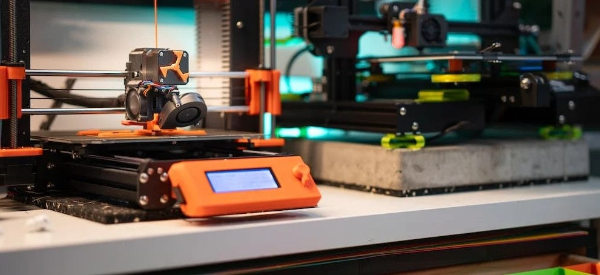

Aerospace Design Project

Summary
In my personal project focused on Aerospace Design in Seattle, WA, I've delved into the
intricacies of aircraft components, particularly airfoils, employing a range of tools
and techniques to enhance performance and efficiency. Here's a glimpse into my process
and achievements:
Objective:
Design, develop, and optimize airfoils for improved aerodynamic performance.
Tools Utilized:
CAD & Slicer Software: Leveraged for precise 3D printing of designs and construction
of airfoils.
ANSYS Software: Applied for in-depth analysis and optimization of airfoil designs,
ensuring enhanced performance.
Python Programming: Utilized for structural simulations, parameter definition, model
discretization, and assembly of stiffness matrices.
Methodology:
Design & Construction: Utilized CAD & Slicer software for
meticulous design and 3D printing of airfoils.
Analysis & Optimization: Employed ANSYS software to analyze and
optimize airfoil designs, aiming for superior aerodynamic characteristics.
Structural Simulations: Leveraged Python for conducting structural
simulations, ensuring robustness and reliability of designs.
Result Visualization: Implemented boundary conditions and visualized
simulation outcomes to analyze and interpret the performance of the airfoil designs.
Key Achievements:
Successfully developed and printed airfoil designs using CAD & Slicer software.
Optimized airfoil performance through detailed analysis using ANSYS software.
Enhanced structural integrity and performance through Python-based simulations.
Effectively visualized simulation outcomes to derive insights for further refinement of
designs.